Current conclusion
Use a hybrid two-level open skeleton: battery at floor-left; power junction, UBECs, and ESC at floor-right; central steering/shock/drivetrain volume left open; and a narrow removable controller deck only if physical shell seating and a full H20 dummy cluster pass. If they fail, use the distributed single-level fallback. The airbox is an airflow/antenna channel, not a controller fallback.
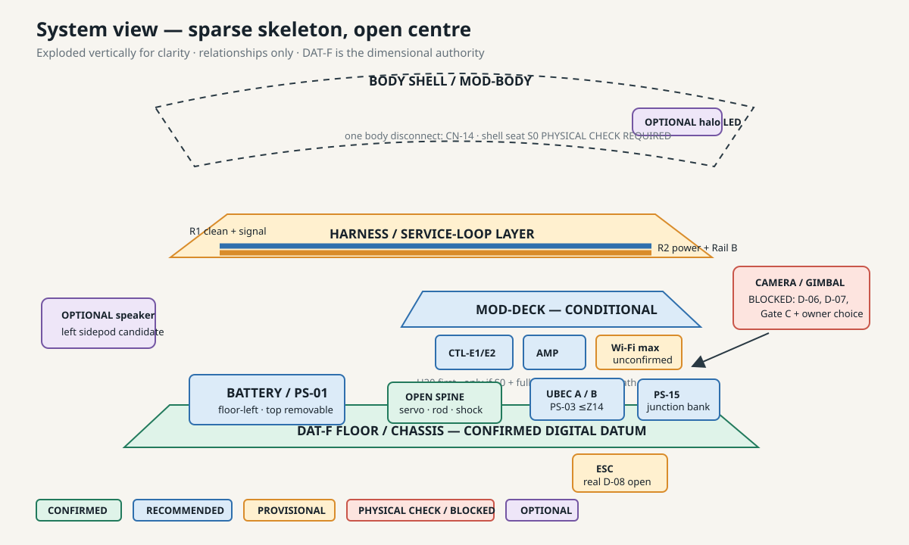
Approximate layout views
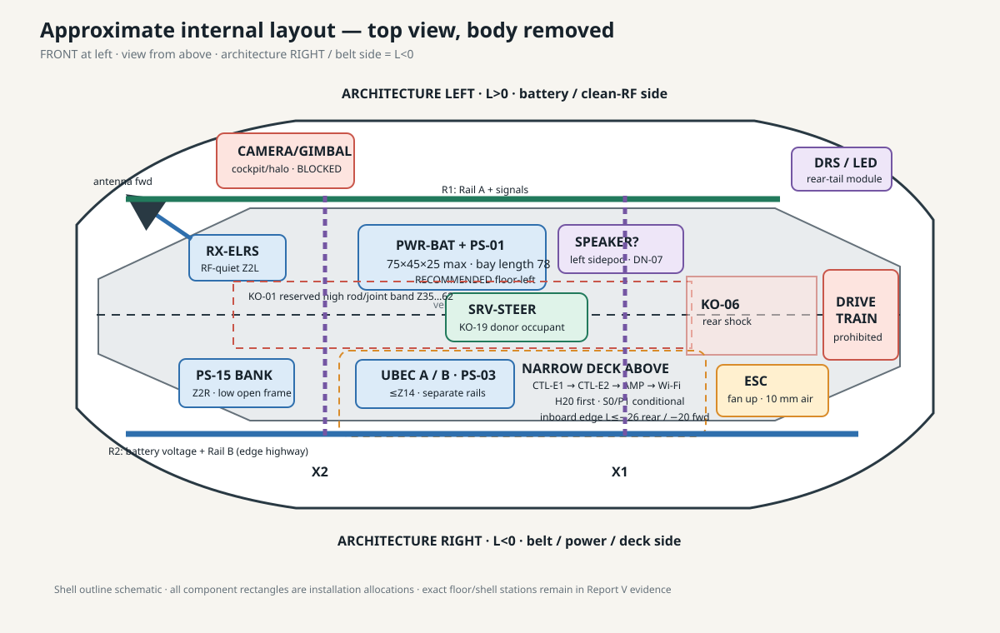
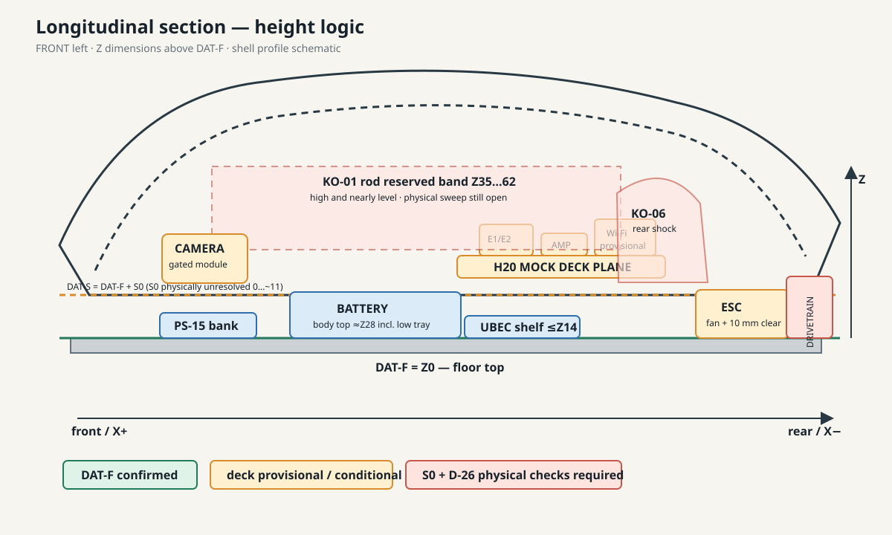
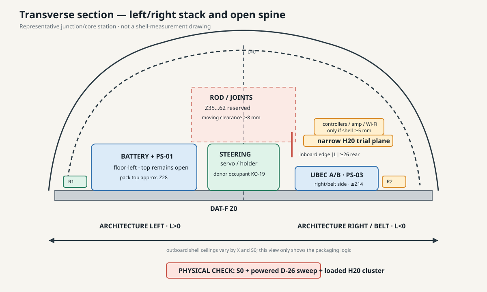
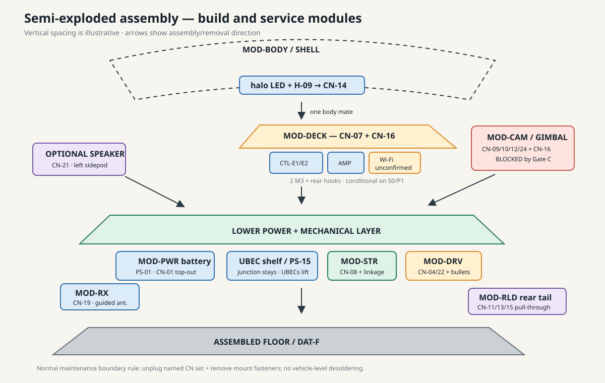
Multi-layer and skeleton assessment
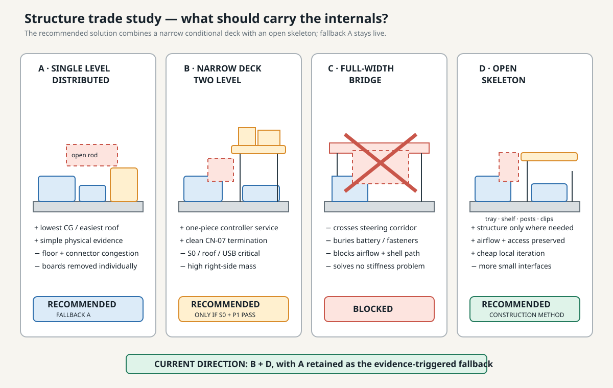
Narrow deck succeeds when
- Physical S0 supports the full H20 cluster.
- Shell clearance remains at least 5 mm.
- Physical D-26 motion remains at least 8 mm away.
- USB, CN-07/CN-16, coax, hand, and removal paths work loaded.
- Lower UBEC modules stay independently serviceable.
Fallback A triggers when
- Side-bay clearance falls below the H.4 trigger.
- The complete controller cluster cannot be inserted or removed.
- Connector/cable volume consumes the apparent roof margin.
- Deck service is not materially simpler than distributed modules.
Structures not carried forward
- Full-width bridge across the central spine.
- Left deck over the battery.
- Full internal cage.
- ESP32 in the narrow airbox channel.
- Electronics in the crash-exposed nose.
Connectorization and harness
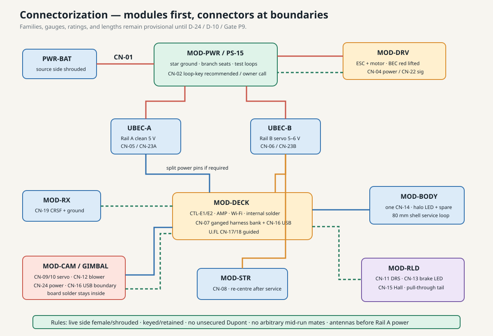
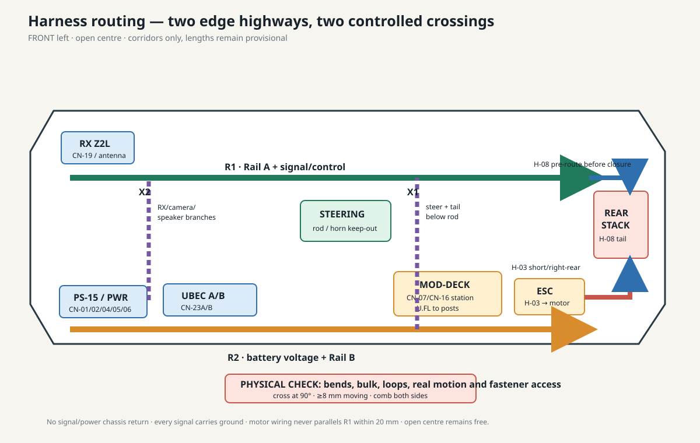
| Boundary | Likely disconnect | Service intent | Open issue |
|---|---|---|---|
| Battery / master | CN-01 / recommended CN-02 | Pack swap and body-on emergency kill | DN-02 owner choice and reach trial |
| Deck | CN-07 + recommended CN-16 | One-station controller module removal | USB integrity and physical hand space |
| Camera/gimbal | CN-09/10/12/24 + CN-16 | Whole module to bench | D-06, Gate C, placement choice |
| Body | CN-14 only | Untethered vertical shell lift | Final shell-side anchor |
| Rear tail | CN-11/13/15 | Pull-through LED/Hall/DRS service | Gate A route and support geometry |
The potentially live side gets female/shrouded contacts. Completed-vehicle connections must be keyed and retained; no unsecured Dupont. Antennas and the Wi-Fi heatsink are installed before Rail-A power. Final families, gauges, ratings, and lengths wait for D-24/D-10/P9.
Support-part concept
The structure stays sparse: tray, low shelf, connector frame, replaceable height gauges/posts, and local clips. Clamp feet are reversible diagnostic coupons—not load-rated vehicle retention.


These local PNGs are ignored generated outputs. If absent, run the generator/validator in cad/README.md. Their tracked source and reports—not the PNGs—are the engineering record.
Assembly sequence
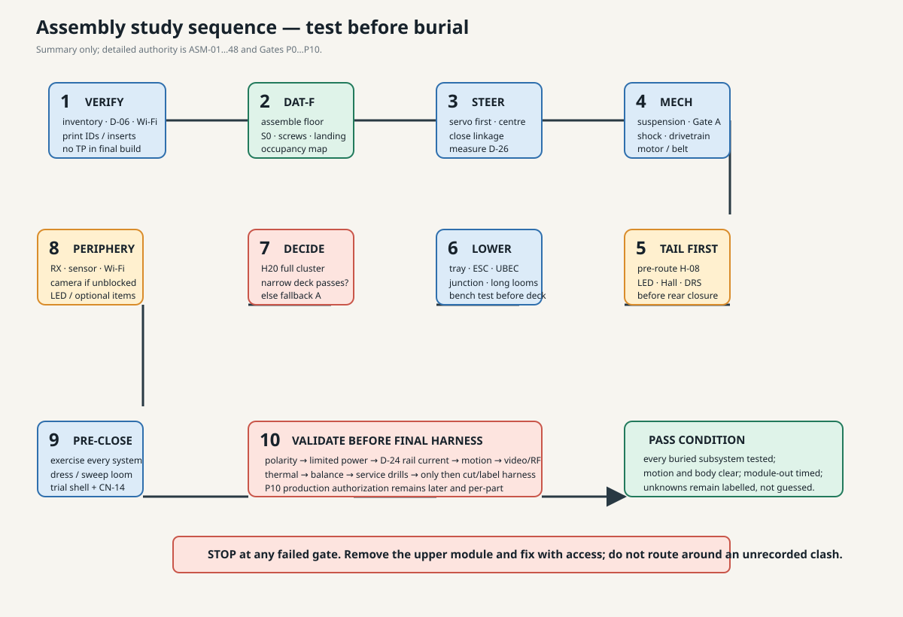
- Verify inventory, envelopes, diagnostics, and measurements.
- Assemble the floor and close S0/landing/occupancy evidence.
- Install, power, centre, and measure steering before packaging around it.
- Close qualified mechanical core and drivetrain.
- Pre-route H-08 before the rear stack closes.
- Install and bench-test the lower layer with long uncut harnesses.
- Use the full H20 cluster to choose narrow deck or fallback A.
- Add receiver, sensors, Wi-Fi and only unblocked optional modules.
- Exercise everything body-off, dress motion loops, then trial the shell.
- Run current, motion, video, RF, thermal, balance, and service gates before final harness/P10 review.
Service/removal concept
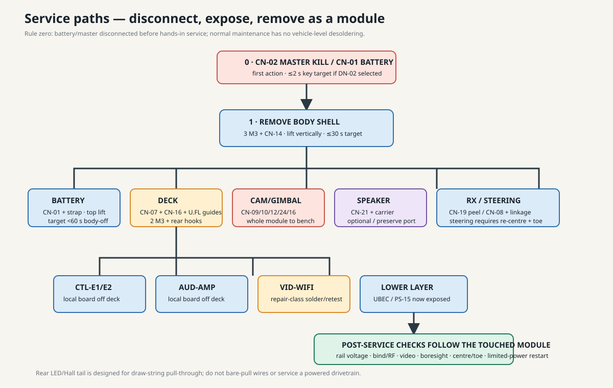
Battery should lift from the top without moving another component. Deck should leave after its boundary connectors, two screws, and rear hooks. UBECs and PS-15 become fully accessible after deck removal. Camera/gimbal leaves as one module. Steering servo removal reopens linkage and requires firmware centring/toe setup. Rear LED/Hall service uses a draw-string pull-through, never a bare-wire pull.
Conflicts and decisions
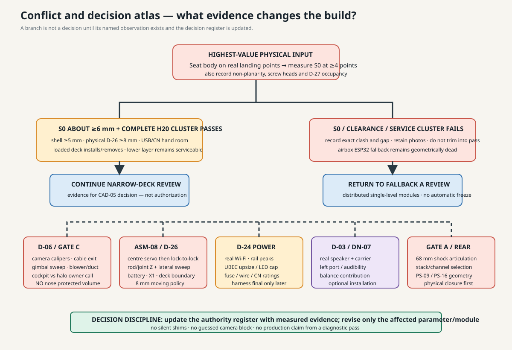
| Priority | Question | Evidence |
|---|---|---|
| 1 | Is the narrow deck viable? | Physical S0 + complete H20 cluster + physical D-26 + access/removal. |
| 2 | Can camera/gimbal be defined? | D-06/D-07, Gate C, cockpit/halo and driver decision. |
| 3 | Will the support strategy attach safely? | D-27 physical occupancy, screw heads, clamp cycles/pull-off, body landing points. |
| 4 | What power/harness hardware is final? | Real Wi-Fi and D-24/P8; then DN-01/DN-04 and P9. |
| 5 | Does the left speaker improve the system? | Real D-03/port/audibility/thermal and balance evidence. |